Lekhoni user manual
Welcome to Lekhoni (লেখনী)
Lekhoni is a desktop-publishing app for Bengali and Assamese that runs in your web browser. Use it to lay out magazines, newsletters, books, posters, invitations and leaflets, then print them, save them as PDF, or hand them on as Word or InDesign files.
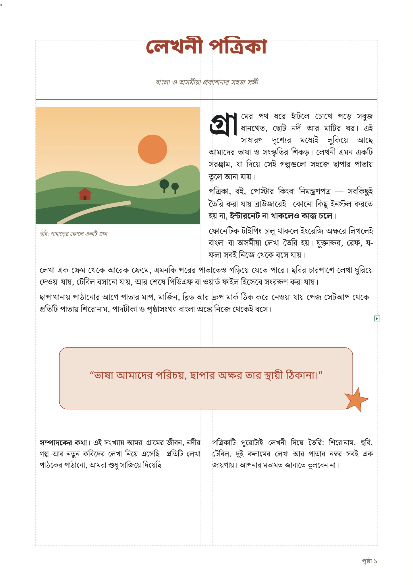
What you can do with it
Type Bengali & Assamese
Phonetic typing turns roman letters into বাংলা or অসমীয়া as you type, conjuncts included.
¶Real typography
Fonts, paragraph styles, lists in Bengali numerals, drop caps that keep conjuncts whole.
⇢Layout tools
Text that flows between frames and pages, text wrap round pictures, columns, guides.
▤Print-ready pages
Any page size, margins, bleed, crop marks, headers, footers and page numbers in ১, ২, ৩.
⇩Save anywhere
Project files, PDF, Microsoft Word (.docx), Adobe InDesign (.idml) and plain text.
✈Works offline
Nothing to install, and once opened it keeps working without the internet.
What you need
- A modern browser. Google Chrome or Microsoft Edge on a computer give the best experience: Save can then keep writing to the same file on your disk. Firefox and Safari work too; there, saving downloads a copy of the file each time.
- A mouse or trackpad and a keyboard. Touch and pen work for moving and resizing, but layout work is easiest with a mouse.
- Fonts. Lekhoni brings its own Bengali fonts. You can add your own font files too (see Fonts).
- No account and no installation. Your work stays on your computer, in the browser and in the files you save.
How to use this manual
- New to Lekhoni? Read The Lekhoni window, then make something with Your first publication.
- Looking for one thing? Use the search box at the top (press / to jump to it).
- Click any screenshot to see it full size.
- Names of buttons and menus are written like this: Page setup…. Keys look like this: Ctrl+S. On a Mac, use ⌘ Cmd wherever this manual says Ctrl.
- The printer button at the top prints the whole manual, one chapter per page.
Getting started
The Lekhoni window
Everything happens in one window: the toolbar along the top, your pages in the middle, page thumbnails on the left, settings on the right and a status bar along the bottom.
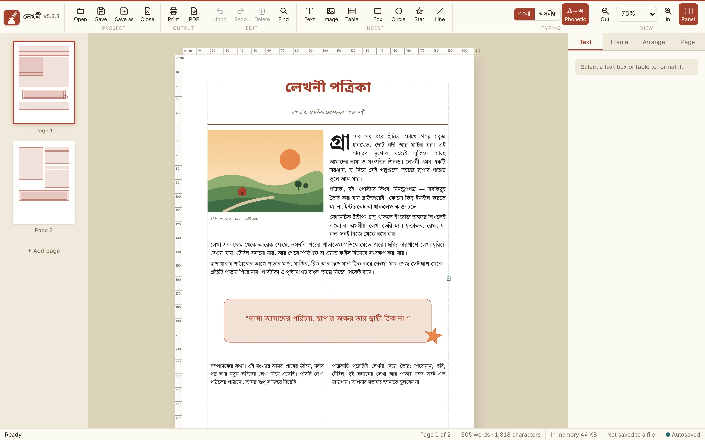
- Project: open, save, save as other formats, close.
- Output: print, or save as PDF.
- Edit: undo, redo, delete, find & replace.
- Insert: text box, picture, table, box, circle, star, line.
- Typing: Bengali or Assamese, phonetic typing on/off.
- View: zoom and show/hide the panel.
- Pages: every page as a thumbnail.
- Rulers: measure, and drag out guides.
- The page: where you lay out your work.
- Properties panel: settings for what you select.
- Status bar: messages, counts, file size, autosave.
The toolbar
The toolbar holds actions for the whole document. Buttons are grouped under small captions.
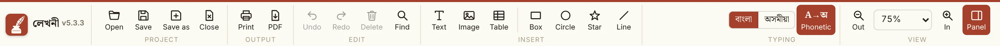
| Group | Buttons |
|---|---|
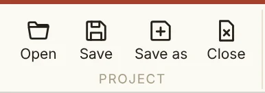 Project | Open a project file · Save it (Ctrl+S) · Save as Word, InDesign or plain text · Close and start a new one. See Projects & files. |
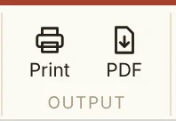 Output | Print every page · PDF opens the print dialog ready to save as PDF. See Printing and PDF. |
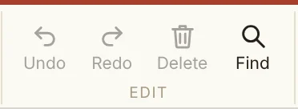 Edit | Undo · Redo · Delete the selected objects · Find & replace. |
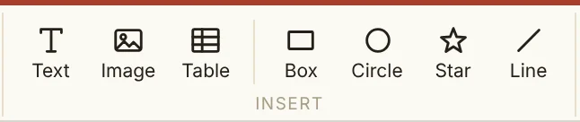 Insert | Text box · Image · Table · Box (rectangle) · Circle · Star · Line. Click a tool, then click on the page where the object should go. |
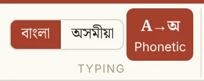 Typing | বাংলা / অসমীয়া chooses the script · Phonetic turns phonetic typing on or off (Ctrl+M). See Typing. |
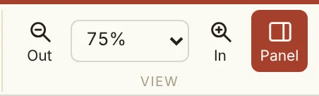 View | Zoom Out, the zoom menu, zoom In · Panel shows or hides the Properties panel. |
Pages on the left
Each page of your document appears as a small picture. The page you are working on has a red border.
- Click a thumbnail to go to that page.
- Hover over a thumbnail for buttons to move it up ↑ or down ↓, duplicate it ⧉ or delete it ×.
- + Add page adds a blank page at the end.
Only the current page is shown in the middle of the window. Printing and saving always include every page.
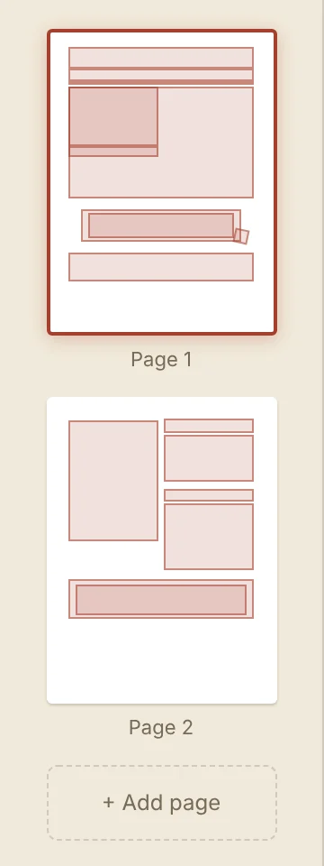
The Properties panel
The panel on the right shows settings for whatever you have selected. It has four tabs, and switches to the right one when you select or place an object.
| Tab | What it holds | Read more |
|---|---|---|
| Text | Paragraph style, font, size, bold/italic/underline, colour, highlight, case, links, alignment, lists, spacing, indents, drop cap. | Working with text |
| Frame | For text boxes: columns, inset, vertical alignment, text flow. For pictures: fitting. For shapes: type, fill and outline. For tables: rows, columns, cell colours, grid. For everything: fill, border and text wrap. | Text frames, Pictures, Shapes, Tables |
| Arrange | Exact position, size, rotation and opacity; lock; group; align and distribute; links on whole objects; stacking order; hide/show; copy, paste, duplicate, delete. | Arranging objects |
| Page | Document title, Page setup…, templates, this page’s options, measurement units, guides, and a list of keyboard shortcuts. | Pages & layout |
Hide the panel with the Panel button when you want more room for the page. Lekhoni remembers whether it was open and which tab you used last.
The status bar
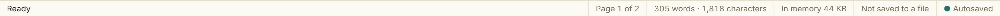
The status bar along the bottom shows messages from Lekhoni and keeps an eye on your document. It is described in detail in The status bar.
Getting started
Your first publication
This walk-through makes a one-page notice with a headline, a paragraph of Bengali text and a picture. It takes about ten minutes and touches every basic skill.
- Open Lekhoni in your browser. A blank A4 page appears. If someone else’s work is showing, click Close on the toolbar and confirm to start fresh.
- Give it a title. Open the Page tab on the right and type a title, for example আমাদের গ্রামের খবর. The title becomes the file name when you save.
- Check the page. Still in the Page tab, click Page setup… to choose the paper size, orientation and margins. A4 portrait is fine for now. See Page setup.
- Add a headline. Click Text on the toolbar, then click near the top of the page. A text box appears with a blinking cursor. Make sure Phonetic is highlighted and বাংলা is chosen, then type
amader gramer khobor. Lekhoni writes আমাদের গ্রামের খবর as you go. (See the key table for every key.) - Make it big. Click the coloured tab just above the box to select the whole box. In the Text tab, set Size to 28, click B for bold and the centre-alignment button. With nothing highlighted, these changes apply to the whole box.
- Fit the box. Drag the small square at the box’s bottom-right corner to make it as wide as the page margins. Drag the coloured tab above the box to move it.
- Add body text. Click Text again and click below the headline. Type a few sentences. Press Enter for a new paragraph and Shift+Enter for a new line inside the same paragraph.
- Add a picture. Click Image, then click on the page. Choose a photo from your computer. Drag the picture to move it and the corner to resize it. To make the text flow round it, open the Frame tab and pick the second Text wrap button.
- Save your project. Press Ctrl+S (or Save). Choose where to keep the
.pubfile. Lekhoni also saves your work in the browser automatically, but the file is your real copy. - Print it or make a PDF. Click PDF, choose Save as PDF as the printer in the dialog, and save. See Printing and PDF.
Basics
Projects & files
Lekhoni keeps your work safe in two ways: it saves automatically inside the browser, and you can save a project file (.pub) to your disk. You can also save copies for Word, InDesign or as plain text, and print or make PDFs.
Automatic saving in the browser
Every change you make is kept in your browser’s storage a moment later. Close the tab, restart the computer, come back tomorrow: your document is still there. The status bar shows Autosaved when everything is stored, and Saving… briefly while you work.
Saving, opening and closing project files
- Save (Ctrl+S) writes the whole document — pages, text, pictures and added fonts — into one
.pubfile. The document title (Page tab) is used as the file name.- In Chrome and Edge you choose a place once; after that, Save quietly updates the same file.
- In Firefox and Safari each Save downloads a fresh copy to your Downloads folder.
- Open loads a
.pubfile. It replaces the document on screen, so save first if you need the current one. Opening starts a fresh undo history. - Close clears the screen and starts a new, empty document, after asking you to confirm.
The status bar shows the size of the file on disk and adds · changed when you have edited since your last save.
.pub, but they are not Microsoft Publisher files, and Adobe PageMaker cannot open them either. Windows may show a Publisher icon on them; ignore it. To give your work to someone using another program, use Save as or a PDF.Save as Word, InDesign or plain text
Save as on the toolbar saves a copy of your document for another program. Your project stays as it is. Keep saving the .pub file too, because only Lekhoni can open everything in it.
- Click Save as.
- Choose Microsoft Word, Adobe InDesign or Plain text.
- Choose where to save (or find the file in Downloads).
Everything is made inside your browser, so this works offline as well.
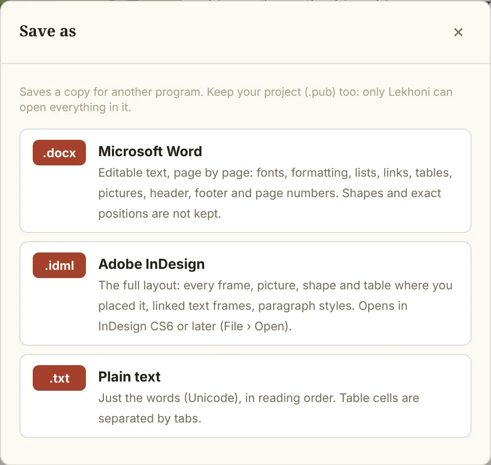
| Kept in the copy | Word (.docx) | InDesign (.idml) | Text (.txt) |
|---|---|---|---|
| All the text, in reading order | Yes | Yes | Yes |
| Fonts, sizes, colours, bold, italic, underline | Yes | Yes | — |
| Alignment, indents, spacing, lists | Yes | Yes | List markers only |
| Paragraph styles | — | Yes | — |
| Tables | Yes | Yes | Cells separated by tabs |
| Pictures | Yes (in the text) | Yes, embedded, in place | — |
| Shapes and lines | — | Yes | — |
| Exact position of every object | — (text flows page by page) | Yes | — |
| Text flowing between frames | As one story | Frames stay linked | As one story |
| Header, footer, page numbers | Yes (numbers in 1, 2, 3) | Yes, exactly as in Lekhoni | — |
| Hyperlinks | Yes | — | — |
| Drop caps | — | Yes | — |
Notes on each format
- Word: Word has no Bengali-digit page numbering, so page numbers in Word use 1, 2, 3. The wording stays Bengali (for example ৩ এর পৃষ্ঠা ১).
- InDesign: open the file with in InDesign CS6 or later. Text is set with the Adobe World-Ready Paragraph Composer, which InDesign needs to shape Bengali and Assamese conjuncts correctly. Install the same fonts on that computer.
- Plain text: saved as UTF-8 (Unicode), so Bengali shows correctly in Notepad, Word and any modern editor. A line like
----- পৃষ্ঠা ২ -----marks each new page.
Printing and PDF
- Print prints every page, one page per sheet.
- PDF opens the same print dialog, ready for you to choose Save as PDF (Chrome, Edge) or PDF › Save as PDF (Mac) as the destination.
In the print dialog, set Margins to None or Default and Scale to 100% so the page prints at its true size; Lekhoni already sets the paper size. Turn on Background graphics if page colours, table shading or frame fills are missing.
Hidden objects, guides, rulers and selection handles are never printed. Hyperlinks stay clickable in the PDF, including links to other pages of the document.
For a professional printer, set up bleed and crop marks first.
Working offline and installing Lekhoni
Once you have opened Lekhoni with an internet connection, your browser keeps a copy of the app. It then opens and works without the internet — phonetic typing, saving, Save as and PDF included. Fonts from the web may not load offline the first time; fonts you added from files always work.
You can also install Lekhoni so it opens in its own window like any other program: in Chrome or Edge, click the install icon at the right of the address bar, or choose the install option in the browser’s menu. On a phone or tablet, use .
When a new version of Lekhoni is published, it downloads in the background. The status bar then says Update installed — reload to use it; reload the page when convenient.
Basics
Pages & layout
Set the size of your pages, their margins and columns, add headers, footers and page numbers, and use rulers and guides to place things exactly.
Page setup
Open the Page tab and click Page setup…. Changes apply to every page straight away and can be undone.
Page size and orientation
- Preset: A3, A4, A5, A6, B4, B5, Letter, Legal, Tabloid, Executive, and the book sizes 5.5 × 8.5 in and 6 × 9 in, or Custom.
- Orientation: portrait or landscape. The margins turn with the paper.
- Width / Height: type exact values for a custom size.
Margins and gutter
- Top, Bottom, Left, Right margins. Margin guides are drawn on screen (not printed); turn them off with Show margin guides.
- Gutter / binding adds extra space on the bound edge. Inside (alternates, for books) adds it on the left of right-hand pages and the right of left-hand pages. Page 1 is a right-hand page.
Columns
Set the number of columns and the gap between them. Column guides appear on the page and objects snap to them. Page columns are guides for placing frames; to split the text inside one frame into columns, see Columns inside a frame.
Paper colour, bleed and crop marks
- Page colour fills every page and prints.
- Bleed: objects and the page colour may run past the edge of the page by this much, so nothing white shows after a printer trims the paper. Bleed shows on screen as a dashed red line, and the printed sheet grows to fit it.
- Crop marks: short lines in the corners that show a printer where to cut.
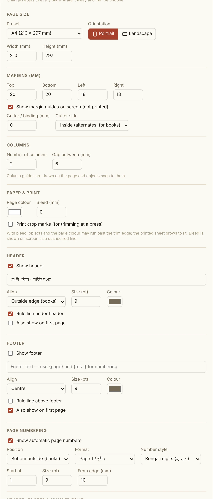
Headers, footers and page numbers
Headers and footers repeat on every page. Set them in Page setup….
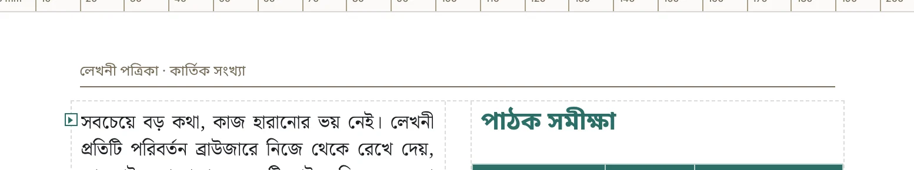
- Tick Show header or Show footer and type the text. Write
{page}for the page number and{total}for the number of pages ({পৃষ্ঠা}and{মোট}work too). - Align: left, centre, right, or outside / inside edge, which swap sides on left and right pages as in a book.
- Size, Colour, an optional rule line, and Also show on first page (untick it for a cover).
- The font for header, footer and numbers is chosen at the bottom of the dialog.
Automatic page numbers
Tick Show automatic page numbers, then choose:
- Position: top or bottom; left, centre, right or outside.
- Format:
১,পৃষ্ঠা ১,N এর পৃষ্ঠা ১or- ১ -. - Number style: Bengali digits (১, ২, ৩), Western digits (1, 2, 3), words (এক, দুই…), or Roman (i, ii, iii / I, II, III).
- Start at a number other than 1, the size, and the distance from edge.
With Bengali digits or words, English words in headers are written in Bengali too: Page {page} of {total} appears as ৩ এর পৃষ্ঠা ১ (ৰ for Assamese).
To leave the header, footer and number off one page (a cover or chapter opener), open that page and tick No header, footer or number on this page in the Page tab.
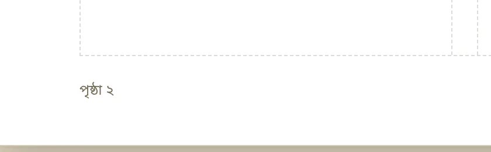
Templates
The Template menu in the Page tab sets margins and columns in one step: Blank, Two column, Three column, Newsletter and Book page (wider margins for binding). Templates keep your page size.
Adding, moving and deleting pages
- Add: + Add page under the thumbnails.
- Duplicate: the ⧉ button on a thumbnail, or Duplicate under This page in the Page tab. Everything on the page is copied.
- Move: the ↑ ↓ buttons on a thumbnail, or Move up / Move down in the Page tab.
- Delete: the × button on a thumbnail. Lekhoni asks first if the page has anything on it. Undo brings it back.
The current page number shows in the status bar (Page 2 of 5).
Rulers, guides and units
Rulers run along the top and left of the page.
- Make a guide: press on a ruler and drag onto the page. A horizontal guide comes from the top ruler, a vertical one from the left ruler.
- Move a guide: drag it. Remove it: drag it back onto the ruler or off the page.
- Objects snap to guides, margins, column guides and the centre of the page while you drag them. Hold Alt while dragging to turn snapping off.
- Guides are saved with the document and never printed.
Units: in the Page tab under View, choose millimetres, centimetres, inches or points. Rulers and every length in the panel and Page setup use this unit.
Show margin & column guides (Page tab) turns the dashed margin and column lines on or off.
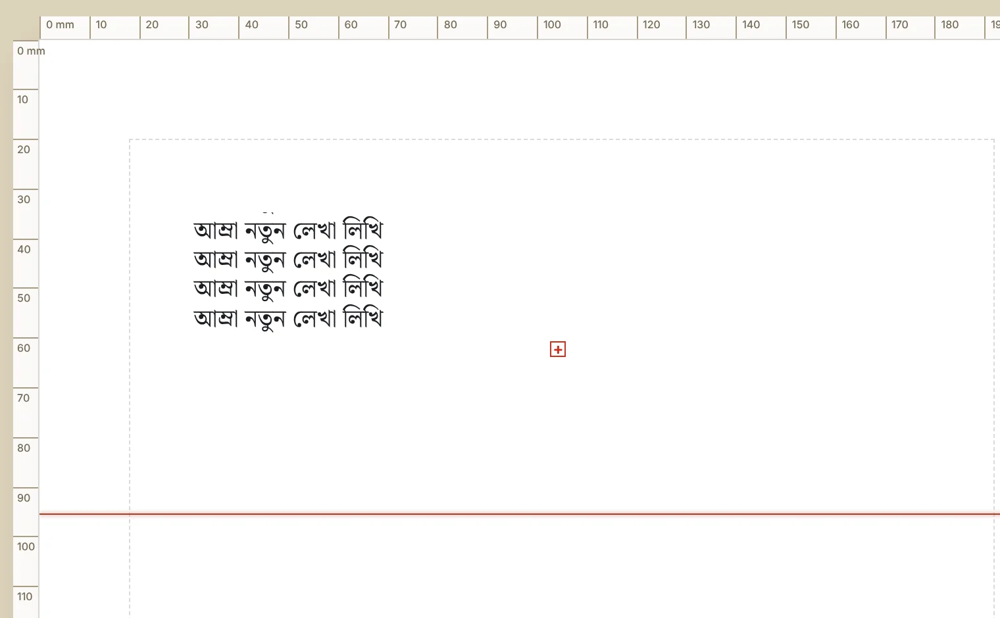
Zoom
- Use Out and In, or choose 50–300%, Fit page or Fit width from the zoom menu.
- Hold Ctrl and turn the mouse wheel (or pinch on a trackpad) to zoom.
- Zoom only changes the view; printing is always at true size.
Text
Typing Bengali & Assamese
With phonetic typing you write Bengali or Assamese on an ordinary English keyboard: type the sounds in roman letters, and Lekhoni writes the letters, vowel signs and conjuncts for you.
Choosing the script
The Typing group on the toolbar has two script buttons:
- বাংলা — Bengali, using র.
- অসমীয়া — Assamese, using ৰ and ৱ.
The choice is saved with the document and also sets the digit words used for page numbers.
Phonetic typing
When the Phonetic button is highlighted, letters you type in a text box or table cell turn into Bengali or Assamese. Press Ctrl+M, or click the button, to switch it on or off — for example to type an English word.
- Each word is converted live while you type it. A space or a punctuation mark finishes the word.
- Backspace inside the word you are typing takes back the last roman letter, so you can correct a sound (খা → খ → ক).
- Clicking elsewhere, using the arrow keys or switching boxes also finishes the word; roman letters never stay on the page.
- Typing over highlighted text replaces it.
- If you use a Bengali keyboard from your computer (such as Avro or the Windows/Mac Bengali keyboard), Lekhoni leaves it alone. Turn phonetic typing off to avoid typing through both.
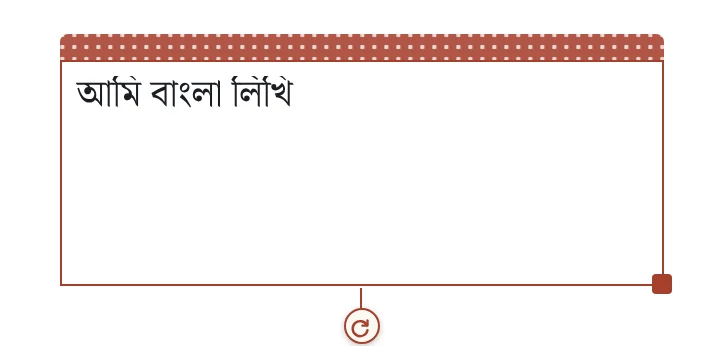
ami bangla likhi typed with phonetic typing on.Try it here
This box uses the same typing engine and key map as Lekhoni. Type roman letters on the left and see the result below.
Key table
The table below is drawn from Lekhoni’s current key map, so it always matches the app. Longer keys win: for example kh gives খ rather than ক + হ. Switch the script above to see the Assamese table.
Loading…
How letters combine
- Conjuncts form by themselves: consonants typed together join with a hasanta, as in
kkh,pr,ngg. - Vowel signs: a vowel after a consonant becomes its sign (কা, কি, কু); a vowel at the start of a word or after another vowel is written in full (আ, ই, উ).
- Inherent vowel:
oafter a consonant adds nothing, sokois just ক. - Ya-phala:
yafter a joining consonant gives ্য (kabyo→ কাব্য). - Reph: a plain
rdoes not form a reph. Typerrfor an explicit reph. - Keeping letters apart: an apostrophe
'between letters stops them joining (k'Shgives কষ). At the start or end of a word,'is an ordinary quote mark. - Danda:
.gives । and..gives ॥. Digits become Bengali digits.
data/translit-forward-map.json). If your organisation changes it, phonetic typing follows the new map, and so does the table and the “try it” box in this manual once the same file is copied here.Pasting text
Pasting into a text box always pastes plain text, without the fonts and colours of the place you copied from, so it takes on the look of the box. Bengali text copied from websites, Word or other Unicode sources pastes correctly. Text in old non-Unicode fonts (such as SutonnyMJ) will look like gibberish and must be converted to Unicode first.
Text
Working with text
Text lives in text boxes. Format a few words or the whole box, build paragraphs with spacing and indents, make lists, add drop caps and save your look as paragraph styles.
Text boxes
- Make one: click Text on the toolbar, then click on the page. The new box uses the font and size shown in the Text tab.
- Type in it: click inside the box. Enter starts a new paragraph; Shift+Enter starts a new line in the same paragraph.
- Select the box itself: click the coloured tab above it. Then panel changes affect the whole box. (Esc stops typing and deselects the box.)
- Move it by dragging the coloured tab above it; resize it with the square at the bottom-right corner.
Formatting words or the whole box
The rule is simple: highlight words to format just them; with nothing highlighted, the whole box changes. The panel always shows the formatting at the cursor.
Fonts
- Choose a font from the list: Noto Serif Bengali, Noto Sans Bengali, Tiro Bangla, Hind Siliguri or Baloo Da 2.
- + Add font file adds a font from your computer (
.ttf,.otf,.woff,.woff2). The font is stored inside your project, so it travels with the.pubfile and works offline. Use only Unicode Bengali fonts.
Size
Type a size in points or pick one from the list. A− and A+ (Ctrl+[ and Ctrl+]) step through common sizes.
Character formatting
- B bold (Ctrl+B), I italic (Ctrl+I), U underline (Ctrl+U),
Sstrikethrough. - x² superscript and x₂ subscript (highlight the text first).
- Colour and Highlight (a marker-pen background; None removes it).
- Case: as typed, UPPERCASE, lowercase, Title Case or Small Caps. Case affects Latin letters; Bengali has no capitals.
- Clear formatting removes bold, colours, sizes and other character formatting.
Many Bengali fonts have no italic. The browser then slants the letters itself, which may look rough; prefer colour or bold for emphasis.
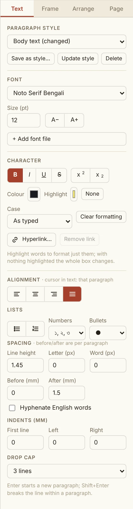
Paragraphs
Alignment
Left, centre, right and justify. With the cursor in the text, alignment changes only that paragraph (or every paragraph you have highlighted). With the box selected but not being edited, it sets the whole box.
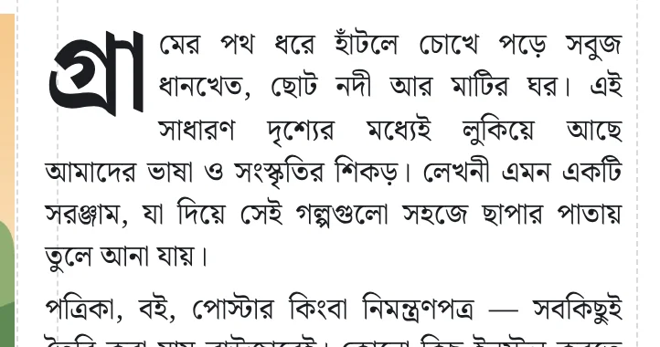
Lists
The two list buttons make a bulleted or numbered list from the paragraphs at the cursor. Choose the style for the box:
- Numbers: ১, ২, ৩ · 1, 2, 3 · i, ii, iii · I, II, III · a, b, c.
- Bullets: ● ○ ■ –
Press Enter twice to end a list. Click the list button again to turn list paragraphs back into ordinary ones.
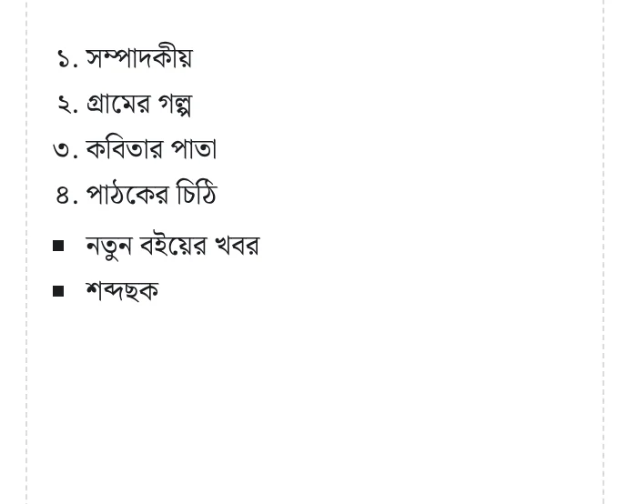
Spacing and indents
- Line height: a multiple of the font size (1.2 is normal; Bengali often reads better at 1.4–1.6).
- Letter and Word spacing, in pixels; negative values tighten.
- Before and After: space above and below each paragraph.
- Indents: First line (the classic paragraph indent), Left and Right.
- Hyphenate English words breaks long English words at line ends. Bengali words are not hyphenated.
Drop caps
Choose 2, 3 or 4 lines under Drop cap to enlarge the first letter of the box. Lekhoni keeps a whole akshara as the large letter (ক্ষ, ত্র, গ্রা), never just its first consonant.
Paragraph styles
A paragraph style stores a complete look — font, size, colour, alignment, spacing, indents, case and drop cap — so you can apply it to any box in one step and keep a publication consistent.
- Built-in styles: Body text, Heading 1, Heading 2, Caption and Quote.
- Apply: select a text box and pick a style from Paragraph style.
- Save as style… saves the selected box’s formatting as a new style with a name you choose.
- Update style redefines the style from the selected box and restyles every box that uses it.
- Delete removes a style; boxes keep their current look.
If you change a styled box by hand, the menu shows the style name with (changed).
Find & replace
Press Ctrl+F (or Ctrl+H, or Find on the toolbar). Lekhoni searches every page, text box and table cell.
- Find next goes to the next match and shows its page.
- Replace changes the current match; Replace all changes every match and tells you how many.
- Match case and Whole words narrow the search.
The window stays open at the side while you work; close it with × or Esc.
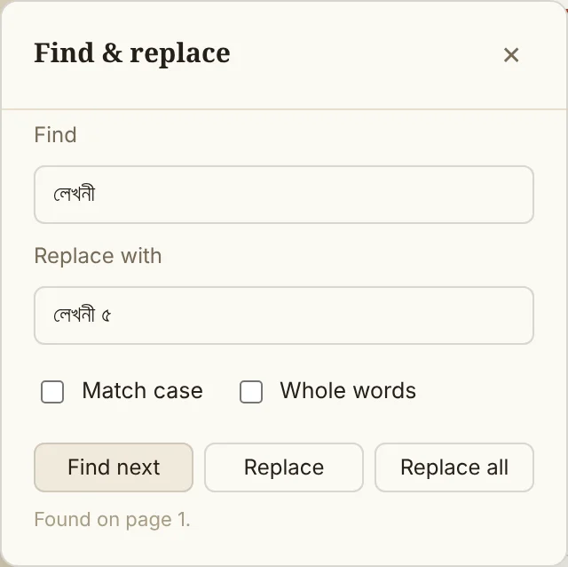
Hyperlinks
Highlight some words and press Ctrl+K (or Hyperlink… in the Text tab). Choose what to link to:
- a web address, an email address, a phone number, or a page in this document.
With nothing highlighted, type the Text to show in the dialog. To link a whole picture, shape, text box or table, select it and use Link object… in the Arrange tab.
With the cursor in a link, a small bar shows where it goes, with Open, Edit and Remove. Ctrl+click follows a link while you edit.
Links stay clickable in PDFs, including links that jump to another page.
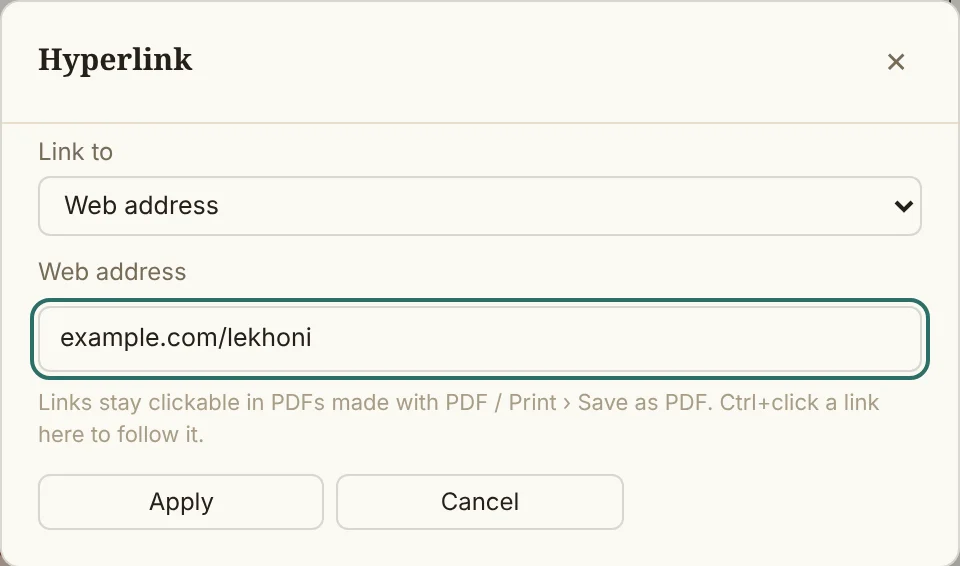
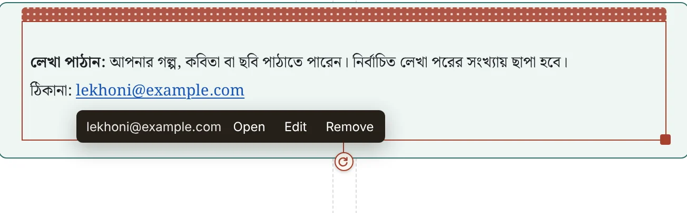
Layout
Text frames, flow & wrap
A text box is also a frame: it can have columns, padding, a background and a border; its story can flow on into other frames; and other objects can push its text aside.
Frame settings
Select a text box and open the Frame tab.
Columns inside a frame
Set Columns (1–6) and the Gap between them. Text fills the first column, then the next.
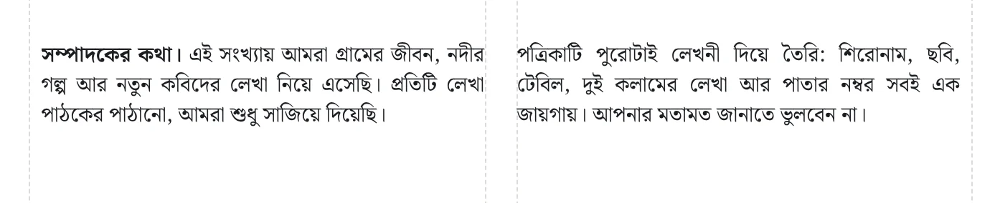
Inset and vertical alignment
Inset is the padding between the frame’s edge and its text. Vertical alignment places the text at the top, middle or bottom of the frame — handy for captions and boxes with a coloured background.
Fill and border
Tick Fill and pick a colour for a background, and set a Border width in points and its colour.
Text that doesn’t fit (overset)
A red + at the bottom of a frame means some text doesn’t fit. The status bar also warns ⚠ 1 frame overset. Either:
- make the frame bigger,
- click Fit frame to text to make it exactly as tall as its text, or
- let the text flow into another frame (below).
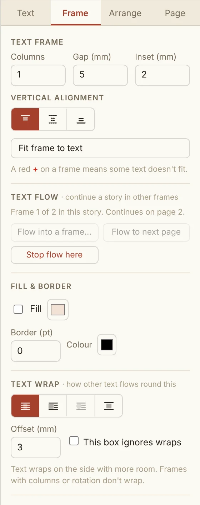
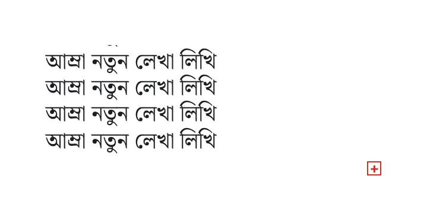
Text that flows between frames
One story can run from one frame into others, on the same page or later pages — the way a magazine article continues in the next column or on page 4. Typing, formatting, find & replace and undo all work across the whole story.
Select the frame where the story starts (or the last frame so far) and use Text flow in the Frame tab:
- Flow into a frame… — then click an empty text frame, on this page or another (switch pages in the thumbnails if needed; Esc cancels).
- Flow to next page — makes a frame of the same size and place on the next page (adding a page if needed) and continues the text there.
- Stop flow here — the text after this frame comes back into it and shows as overset.
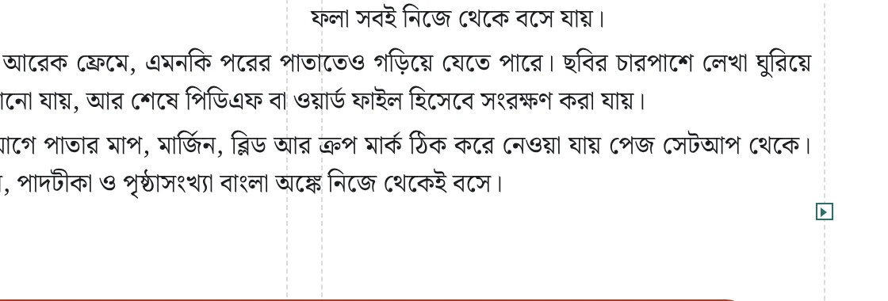
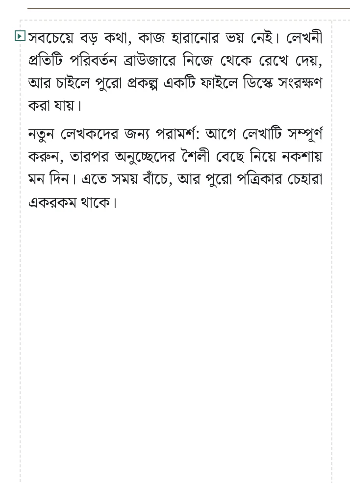
The panel tells you where you are, for example Frame 1 of 2 in this story. Continues on page 2. If you delete the first frame, the story moves into the frames that remain.
Text wrap
Any object — picture, shape, table or text box — can make the text of other text boxes flow round it. Select the object and choose under Text wrap in the Frame tab:
- No wrap: text runs over or under the object.
- Wrap round the frame: text goes round the object’s rectangle.
- Wrap round the outline: text follows the shape of ellipses, triangles, diamonds and stars.
- Jump: text stops above the object and carries on below it.
Offset sets the gap between object and text. Text goes round the side with more room.
A text box can be told to ignore wraps (tick This box ignores wraps), for example a caption placed over a picture. Frames with several columns, and rotated frames, don’t wrap.
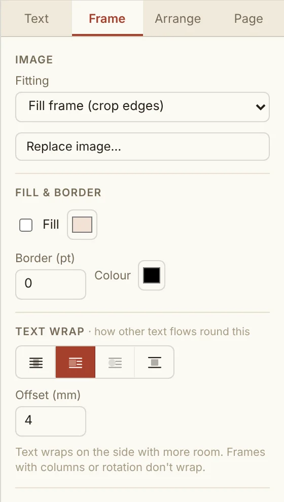
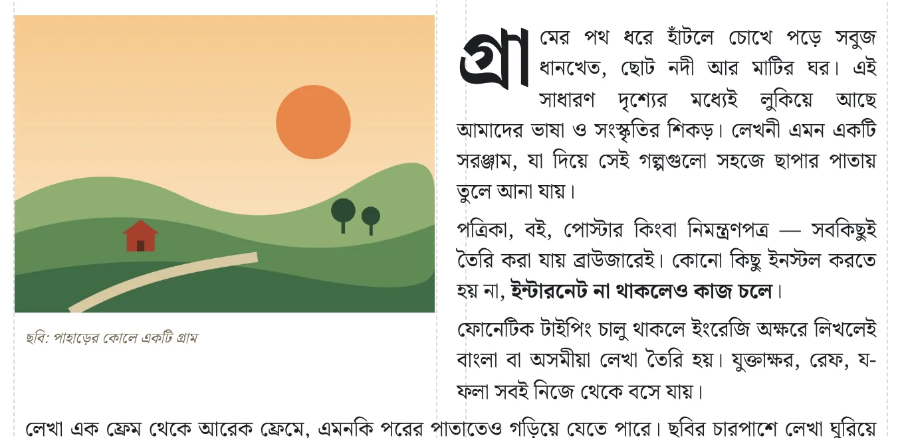
Layout
Pictures
Place photos and drawings on the page, decide how they fill their frame, and let text flow round them.
Inserting a picture
- Click Image on the toolbar.
- Click on the page where the picture should go.
- Choose an image file (JPEG, PNG, WebP, GIF or SVG).
The picture is stored inside your project, so it travels with the .pub file. Very large photos (longer than 3000 pixels) are scaled down on import to keep files small; this is still plenty for print.
Moving, resizing and replacing
- Move: drag the picture itself.
- Resize: drag the square at the bottom-right corner; hold Shift to keep proportions.
- Rotate: drag the round handle below the picture (see Rotating).
- Replace: double-click the picture, or click Replace image… in the Frame tab. The frame keeps its size and place.
Fitting
- Fit inside frame: the whole picture shows; there may be empty space at the sides.
- Fill frame (crop edges): the frame is filled; edges that don’t fit are hidden.
- Stretch to frame: the picture is stretched to the frame’s exact shape.
Fill & border add a background colour (seen with Fit inside) and a border. Text wrap works as described in Text wrap.
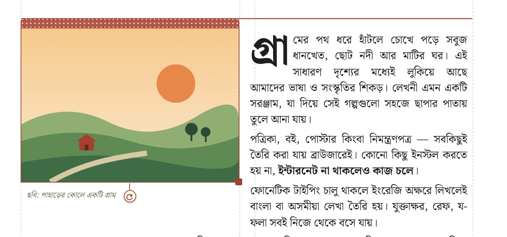
Layout
Shapes & lines
Boxes, circles, stars and lines decorate a page, frame a quotation or separate sections.
Drawing a shape
Click Box, Circle, Star or Line on the toolbar, then click on the page. Drag the shape to move it and its corner to resize it.
Shape settings
Select the shape and open the Frame tab.
- Type: change between rectangle, ellipse, triangle, diamond, star and line at any time.
- Corner: rounds the corners of a rectangle.
- Points: the number of points of a star (3–24).
- Fill: tick it and choose a colour, or untick it for an outline only.
- Outline colour, Width in points (0 for none) and Style: solid, dashed or dotted.
- Text wrap: shapes can push text aside, including round their outline.
Lines and arrows
For a line, choose its Direction (horizontal, vertical, rising or falling) and Arrows at the end, the start or both ends.
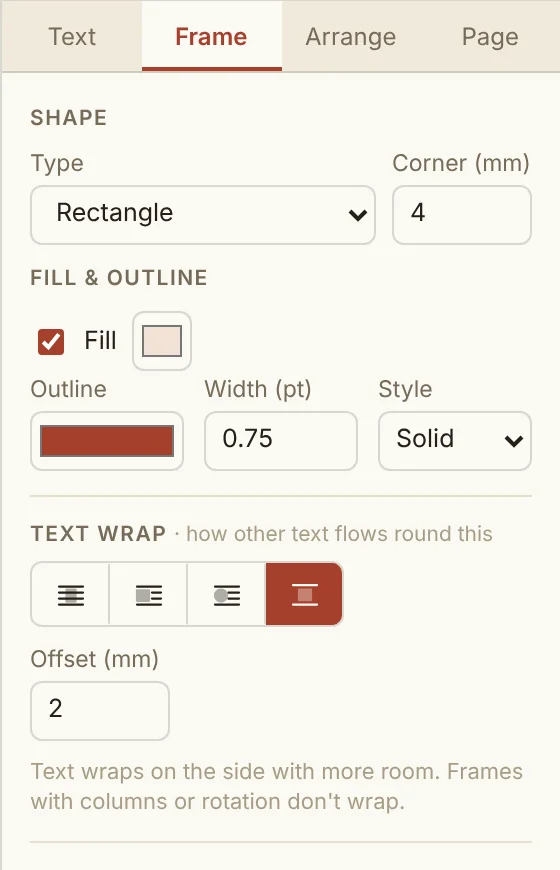
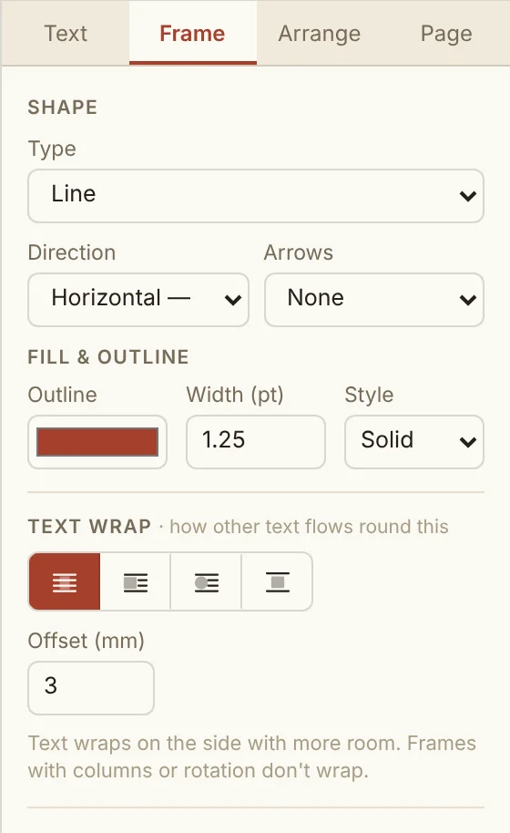
Layout
Tables
Tables arrange text in rows and columns, with shading, borders and their own text formatting.
Inserting a table
- Click Table on the toolbar.
- Click on the page where the table should go.
- Enter the number of Rows and Columns and click Insert.
The first row starts shaded and bold, as a heading row. Click into any cell to type.
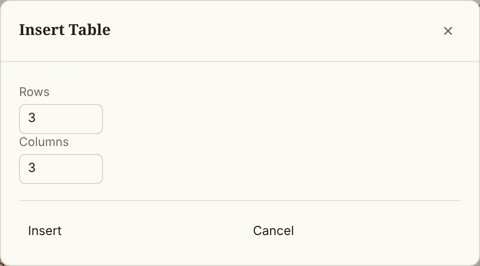
Changing a table
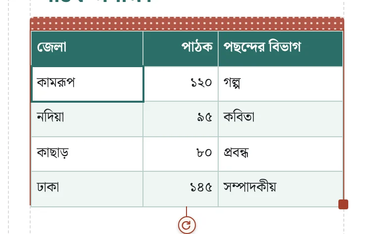
- Rows and columns: click into a cell first, then use + Row above, + Row below, + Column left, + Column right, Delete row or Delete column in the Frame tab.
- Column widths and row heights: drag any border inside the table. Rows never shrink below their text.
- Cell colours: choose Apply to — this cell, this row, this column or the whole table — then pick the Fill and Text colours.
- Vertical alignment of the text in cells: top, middle or bottom.
- Grid: border width and colour for all cell lines, and the Padding inside each cell.
- Text: font, size, bold and colours in the Text tab work on highlighted words, or on the whole table. Alignment applies to the cell you are in.
Move a table with the tab above it, and resize it with its corner: the columns and rows scale with it.
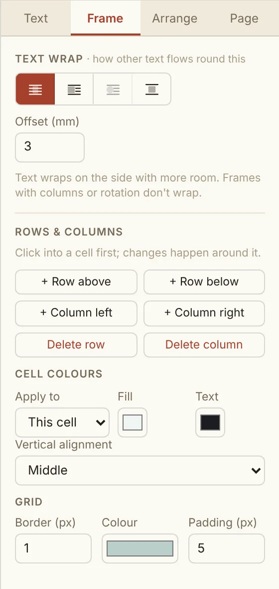
Layout
Arranging objects
Select, move, resize, rotate, align, stack, group, lock and hide the objects on your page.
Selecting
- Click an object to select it. A selected object shows a coloured outline, a move tab above it, a resize square at its corner and a round rotation handle below.
- Shift+click adds an object to the selection or takes it out.
- Drag across an empty part of the page to select everything the rectangle touches.
- Ctrl+A (while not typing) selects everything on the page.
- Esc deselects. The status bar shows what is selected and its size.
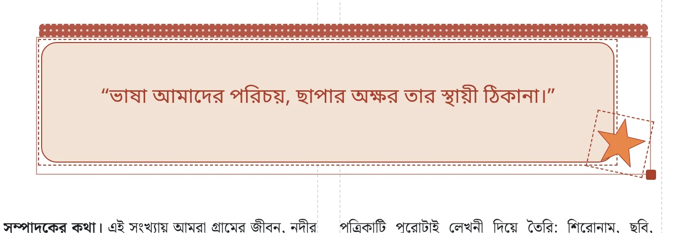
Moving and resizing
- Move: pictures and shapes move by dragging them; text boxes and tables move by their tab (so clicking in them still puts the cursor in the text).
- Nudge: arrow keys move the selection 1 mm; with Shift, 5 mm.
- Resize: drag the square at the bottom-right corner. Hold Shift to keep proportions.
- Snapping: objects snap to margins, column guides, your own guides and the page centre. Hold Alt while dragging to place freely.
Rotating
Drag the round handle below a selected object to turn it round its centre.
- It settles on 0°, 90°, 180° and 270° when you get close.
- Hold Shift to turn in 15° steps.
- Double-click the handle to straighten the object.
- The angle shows in the status bar while you drag, and in Rotate (°) in the Arrange tab, where you can type an exact value.
Locked objects have no rotation handle. Rotated text frames don’t wrap round other objects.
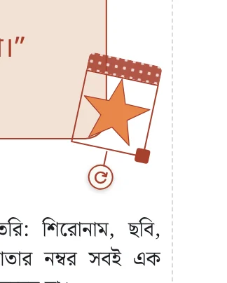
The Arrange tab
Exact position and size
X and Y are the distance of the top-left corner from the page’s top-left corner; W and H the width and height, all in your chosen unit. Also Rotate and Opacity (0–100%).
Lock
Tick Lock so an object can’t be moved, resized, rotated or deleted by accident. You can still edit the text in a locked text box.
Group
Select several objects and click Group (Ctrl+G) to move and scale them as one. Click a group to select it; click a text box in it again to edit its text. Ungroup is Ctrl+Shift+G.
Align and distribute
Choose what to align relative to: page margins, page edges, or each other. Then align left edges, centres, right edges, tops, middles or bottoms. With three or more objects, Distribute ↔ and Distribute ↕ make the gaps between them equal.
Stacking order
Objects can overlap. To front and To back move an object above or below all others; Forward and Backward move it one step.
Hide and show
Hide leaves an object in the document but out of print; it shows as a faint outline so you can select it and Show it again.
Copy, paste and duplicate
Copy (Ctrl+C), cut (Ctrl+X), Paste (Ctrl+V) onto the current page — also onto another page — and Duplicate (Ctrl+D).
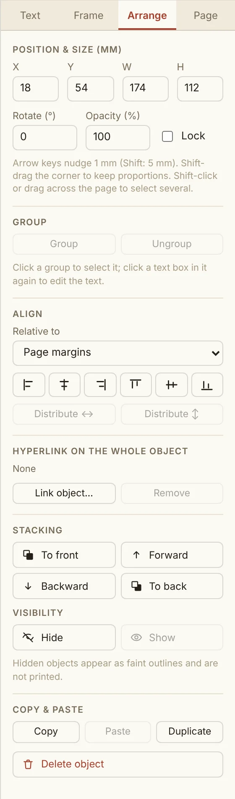
Deleting
Select one or more objects and click Delete on the toolbar, press Delete (or Backspace) when you are not typing, or use Delete object at the bottom of the Arrange tab. The toolbar button also works while you are typing in a text box, and deletes the whole box. Locked objects are kept. Undo brings deleted objects back.
Undo and redo
Undo (Ctrl+Z) and Redo (Ctrl+Y) step through your last 100 changes. Each action — a move, a style, a deletion — is one step; typing is grouped by pauses. While you are typing inside a text box, Ctrl+Z undoes typing in that box; click outside the text for document-wide undo.
Reference
The status bar
The one-row bar along the bottom of the window shows messages and keeps an eye on your document.
| Item | What it tells you |
|---|---|
| Message | The latest message from Lekhoni (“Copied”, “Text now flows into that frame”, “Locked — unlock it in Arrange to move”…). New messages show at full strength, then fade a little after a few seconds. Warnings are red. |
| Page | Which page you are on and how many there are. |
| Selection | What is selected and its size, rotation and lock state, for example Text box · 80 × 30 mm · 15° or 3 objects selected. |
| Words · characters | Counts for the whole document: every text box and table cell (header and footer not included). Point at it for characters without spaces and the number of letters as you see them (aksharas). |
| ⚠ Overset | Appears when text on this page doesn’t fit its frame. See overset. |
| In memory | The size of the document as it stands — about the size the project file would be if saved now. Point at it for the size of the undo history. |
| On disk | The size of the project file you last saved or opened, with · changed when you have edited since. Not saved to a file until you save or open one in this session. |
| Autosave | Autosaved when the copy in this browser is up to date, Saving… while you work. It turns red if the browser’s storage is full; then save a project file straight away. |
On a narrow window the least important items are hidden (memory first, then selection, then disk, then counts) so the bar always stays a single row. The status bar is never printed.
Reference
Keyboard shortcuts
On a Mac, use ⌘ Cmd instead of Ctrl. The same list is in the app, at the bottom of the Page tab.
Document
| Ctrl+S | Save the project |
| Ctrl+Z / Ctrl+Y | Undo / redo (Ctrl+Shift+Z also redoes) |
| Ctrl+F or Ctrl+H | Find & replace |
| Ctrl+M | Phonetic typing on / off |
| Ctrl + mouse wheel | Zoom |
| Esc | Stop typing, cancel a tool, close a dialog, deselect |
Text
| Enter | New paragraph |
| Shift+Enter | New line in the same paragraph |
| Ctrl+B / I / U | Bold / italic / underline |
| Ctrl+[ / Ctrl+] | Font size down / up |
| Ctrl+K | Hyperlink (on highlighted text, or on the selected object) |
| Ctrl+click | Follow a hyperlink |
| Ctrl+A (in text) | Highlight all the text in the box |
Objects
| Delete / Backspace | Delete the selected objects |
| Ctrl+C / X / V | Copy / cut / paste objects |
| Ctrl+D | Duplicate |
| Ctrl+A (not in text) | Select everything on the page |
| Ctrl+G / Ctrl+Shift+G | Group / ungroup |
| Shift+click | Add to or remove from the selection |
| Arrow keys | Nudge 1 mm (with Shift: 5 mm) |
| Shift + drag corner | Resize keeping proportions |
| Shift + drag rotation handle | Rotate in 15° steps |
| Alt + drag | Move without snapping |
Help
Troubleshooting & FAQ
Answers to the questions people ask most.
My document has disappeared.
Lekhoni’s automatic copy lives in one browser on one computer. Check you are using the same browser and not a private window. If you cleared your browsing data, the automatic copy is gone; open your last .pub file with Open. This is why saving a project file matters.
The status bar says “Not autosaved — storage full”.
The browser has run out of room for the automatic copy, usually because of many large pictures. Save a project file at once with Ctrl+S. Then free space: delete unused pictures, or replace huge photos with smaller ones.
Phonetic typing doesn’t work.
- Check that Phonetic on the toolbar is highlighted (Ctrl+M).
- Click inside a text box or table cell first.
- If the status bar says Phonetic typing unavailable (map failed to load), reload the page while connected to the internet once.
- A Bengali keyboard from your operating system takes over typing; switch your computer back to the English keyboard to use phonetic typing.
A word comes out with the wrong letters.
Look up the keys in the key table. Longer keys win, so type an apostrophe to keep letters apart (k'Sh). Use Backspace while still in the word to step back one roman letter.
Justify doesn’t stretch some lines.
The last line of every paragraph, and a line ending with Shift+Enter, are never stretched. With the cursor in the text, Justify changes only that paragraph; select the box, or highlight all with Ctrl+A, to justify everything. See Alignment.
What is the red + on my text box?
Some text doesn’t fit. See Text that doesn’t fit.
The fonts look different in Word, InDesign or on another computer.
Other programs use the fonts installed on their computer. Install the same Unicode Bengali fonts there. Fonts you added to Lekhoni from a file travel inside the .pub file, but not inside Word or InDesign copies.
Pasted Bengali text looks like gibberish.
The text was written in an old non-Unicode font (such as SutonnyMJ from Bijoy). Convert it to Unicode with a converter first, then paste it.
Can PageMaker or Microsoft Publisher open my .pub file?
No. Lekhoni project files share the .pub extension with Microsoft Publisher by coincidence; the contents are completely different, and PageMaker uses its own formats. Use Save as (Word or InDesign) or a PDF to share your work.
My printout is the wrong size or missing colours.
In the print dialog, set Scale to 100% and Margins to None or Default, and turn on Background graphics. See Printing and PDF.
I can’t move, resize or delete an object.
It is probably locked: the status bar says so when you try. Untick Lock in the Arrange tab. If clicking selects a different object, the one you want may be underneath; use To back on the top one, or select by dragging across the page.
Text doesn’t wrap round my picture.
Check the picture’s Text wrap setting in the Frame tab. Text boxes with several columns, rotated text boxes, and boxes set to ignore wraps are not affected by wraps.
The status bar says “Update installed — reload to use it”.
A new version of Lekhoni has been downloaded. Save if you like, then reload the page to start using it. Your document is kept.
Reference
What’s new
The main changes in each version of Lekhoni.
5.3.3 — Status bar
A one-row status bar along the bottom: messages, page, selection, word and character counts, overset warning, size in memory and on disk, and autosave state.
5.3.2 — Justify fixes
- Line breaks (Shift+Enter) no longer split a paragraph when aligning, so Justify reaches the whole paragraph. Older documents are converted when opened and look the same.
- Paragraph alignment no longer fixes the font size of the text.
- A justified paragraph that continues in the next linked frame is justified to the end of the first frame.
5.3.1 — Delete button and rotation handle
A Delete button on the toolbar, and a rotation handle below selected objects.
5.3.0 — Save as Word, InDesign or text
Save as Microsoft Word (.docx), Adobe InDesign (.idml) and plain text (.txt), made in the browser and working offline.
5.2.0 — Links, wrap, flow and groups
- Hyperlinks on text and whole objects, kept in PDFs.
- Text wrap round frames and shape outlines, and jump wrap.
- Text flowing through linked frames and onto later pages.
- Selecting several objects, groups, align and distribute.
- Alignment per paragraph; measurement units; drop caps that keep conjuncts whole.
5.1.0 — Desktop-publishing pass
- Formatting of highlighted words; real paragraphs with spacing and indents; lists with Bengali numbers; drop caps; paragraph styles; find & replace.
- Text frames with columns, inset, vertical alignment, fill and border; overset mark and Fit frame to text.
- Page setup: orientation, many paper sizes, columns, page colour, bleed and crop marks, richer headers, footers and page numbers.
- Exact position and size, rotation, opacity, lock, stacking steps, copy and paste; more shapes; table editing; zoom presets.
5.0 — The new Lekhoni
- A new toolbar and Properties panel; table resizing; a new logo.
- Phonetic typing rebuilt: live conversion, Backspace within a word, plain-text paste, Ctrl+M.
- Storage in the browser’s database (room for pictures), offline use, print and PDF of every page.